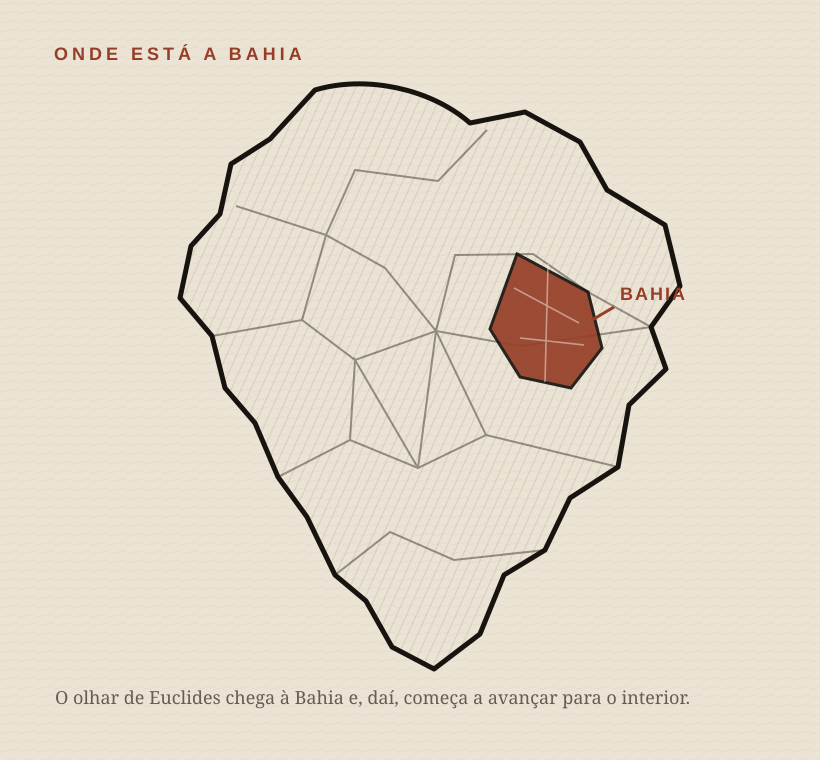
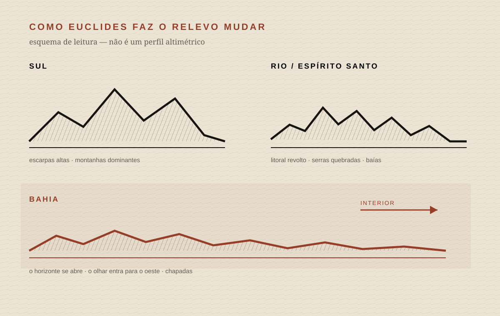
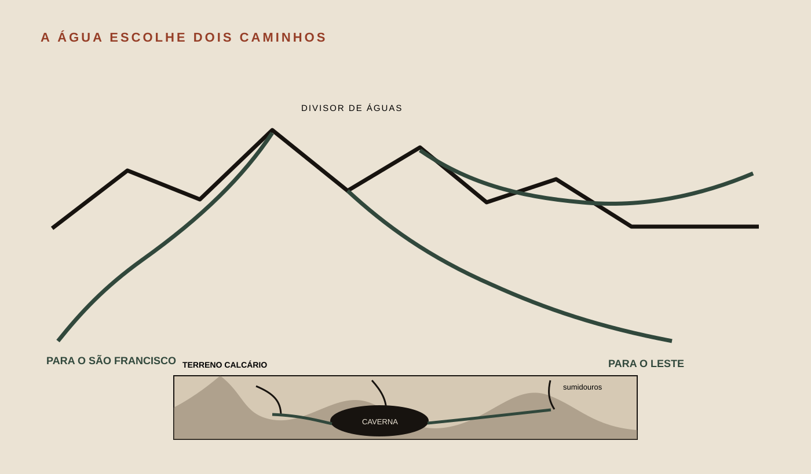
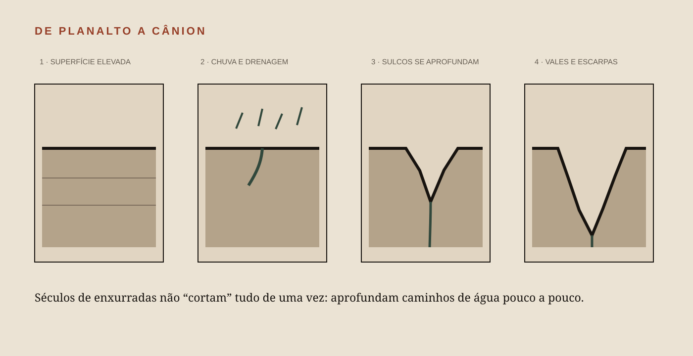
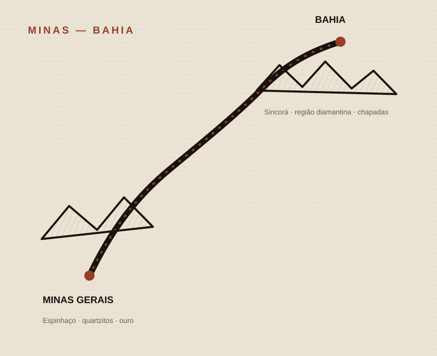
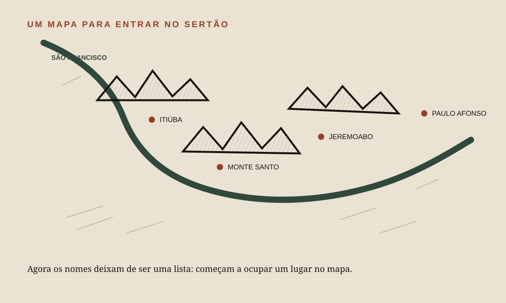

01
O Brasil se abre até a Bahia
EUCLIDES
O planalto central do Brasil desce, nos litorais do Sul, em escarpas inteiriças, altas e abruptas. Assoberba os mares; e desata-se em chapadões nivelados pelos visos das cordilheiras marítimas, distendidas do Rio Grande a Minas.
De sorte que quem o contorna, seguindo para o norte, observa notáveis mudanças de relevos [...] até que, em plena faixa costeira da Bahia, o olhar, livre dos anteparos de serras que até lá o repulsam e abreviam, se dilata em cheio para o ocidente, mergulhando no âmago da terra amplíssima lentamente emergindo num ondear longínquo de chapadas...


02
A ossatura antiga da terra
EUCLIDES
Surgem primeiro as possantes massas gnaissegraníticas, que a partir do extremo sul se encurvam em desmedido anfiteatro, alteando as paisagens admiráveis...
03
Minas: pedra, ouro e altitude
EUCLIDES
...e jazem sotopostas a complexas séries de xistos metamórficos, infiltrados de veeiros fartos, nas paragens lendárias do ouro.
A região continua alpestre. O caráter das rochas, exposto nas abas dos cerros de quartzito, ou nas grimpas em que se empilham as placas do itacolomito avassalando as alturas, aviva todos os acidentes, desde os maciços que vão de Ouro Branco a Sabará, à zona diamantina expandindo-se para nordeste nas chapadas que se desenrolam nivelando-se às cimas da Serra do Espinhaço.

VOCABULÁRIO SEM TRAVA
sotopostas
Colocadas por baixo, cobertas por outras camadas.
xistos metamórficos
Rochas transformadas por pressão e temperatura, com foliação bem marcada — uma tendência a se organizar em planos.
veeiros
Termo antigo para veios ou faixas mineralizadas na rocha. No contexto, ajuda a ligar a geologia às “paragens do ouro”.
quartzito
Rocha metamórfica muito rica em quartzo, geralmente derivada de arenitos submetidos a pressão e temperatura.
itacolomito
Nome histórico associado a certos quartzitos micáceos, inclusive variedades flexíveis. A própria nomenclatura geológica mudou bastante desde Euclides.
04
A água escolhe dois caminhos
EUCLIDES
Dali descem, acachoantes, para o levante, tombando em catadupas ou saltando travessões sucessivos, todos os rios que do Jequitinhonha ao Doce procuram os terraços inferiores do planalto [...] e volvem águas remansadas para o poente os que se destinam à bacia de captação do São Francisco...
...depois de percorridas ao sul as interessantes formações calcárias do Rio das Velhas, salpintadas de lagos, solapadas de sumidouros e ribeirões subterrâneos, onde se abrem as cavernas do homem pré-histórico de Lund...


05
Grão Mogol: quando uma chapada parece serra
EUCLIDES
A Serra do Grão Mogol, raiando as lindes da Bahia, é o primeiro espécime dessas esplêndidas chapadas imitando cordilheiras, que tanto perturbam aos geógrafos descuidados...

06
Como um planalto vira cânion
EUCLIDES
...no alto, sobrepujando-as, ou circuitando-lhes os flancos em vales monoclínicos, os lençóis de grés, predominantes e oferecendo aos agentes meteóricos plasticidade admirável aos mais caprichosos modelos.
Caindo por ali há séculos as fortes enxurradas [...] foram pouco a pouco reprofundando-as, talhando-as em quebradas que se fizeram cânions, e se fizeram vales em declive, até orlarem de escarpamentos e despenhadeiros aqueles plainos soerguidos.

VOCABULÁRIO SEM TRAVA
grés
Nome antigo muito usado para arenito: rocha sedimentar formada principalmente por grãos de areia consolidados.
agentes meteóricos
Chuva, variações de temperatura, vento e outros processos que desgastam e remodelam a rocha na superfície.
vale monoclínico
Forma de relevo ligada a camadas rochosas inclinadas predominantemente para um lado. Aqui basta guardar a ideia de camadas inclinadas moldando o terreno.
07
A abstração vira um lugar: Bom Jesus da Lapa
EUCLIDES
Adiante, a partir de Monte Alto, estas conformações naturais se bipartem: no rumo firme do norte a série do grés figura-se progredir até ao platô arenoso do Açuruá, associando-se ao calcário que aviva as paisagens na orla do grande rio, prendendo-as às linhas dos cerros, talhados em diáclase, tão bem expressos no perfil fantástico do Bom Jesus da Lapa...

08
A Bahia como prolongamento de Minas
EUCLIDES
Reponta a região diamantina, na Bahia, revivendo inteiramente a de Minas, como um desdobramento ou antes um prolongamento, porque é a mesma formação mineira rasgando, afinal, os lençóis de grés, e alteando-se com os mesmos contornos alpestres e perturbados, nos alcantis que irradiam da Tromba ou avultam para o norte nos xistos huronianos das cadeias paralelas de Sincorá.


09
O terreno se fragmenta — e o sertão se aproxima
EUCLIDES
Deste ponto em diante, porém, o eixo da Serra Geral se fragmenta, indefinido. Desfaz-se.
Revela-os o São Francisco, no vivo infletir com que torce para o levante, indicando no mesmo passo a transformação geral da região.
Último rebento da serra principal, a da Itiúba reúne-lhe alguns galhos indecisos, fundindo as expansões setentrionais das da Furna, Cocais e Sincorá.
Alteia-se um momento, mas descai logo para todos os rumos: para o norte [...] para o sul, em segmentos dispersos que vão até além do Monte Santo; e para leste, passando sob as chapadas de Jeremoabo, até se desvendar no salto prodigioso de Paulo Afonso.

FONTES E CRÉDITOS
Texto-base de trabalho: Os Sertões, Euclides da Cunha, edição Biblioteca Básica Brasileira disponibilizada no projeto. A grafia e a terminologia de Euclides foram preservadas nos trechos exibidos.
Explicações geológicas: sínteses didáticas apoiadas no Serviço Geológico do Brasil (SGB/CPRM) e em referências geológicas modernas. Quando a nomenclatura de Euclides é histórica ou imprecisa segundo o uso atual, a página trata o termo como linguagem da época, não como classificação contemporânea.
Imagens externas: Wikimedia Commons. Cada imagem mantém, na própria legenda, o link para o arquivo e sua licença.